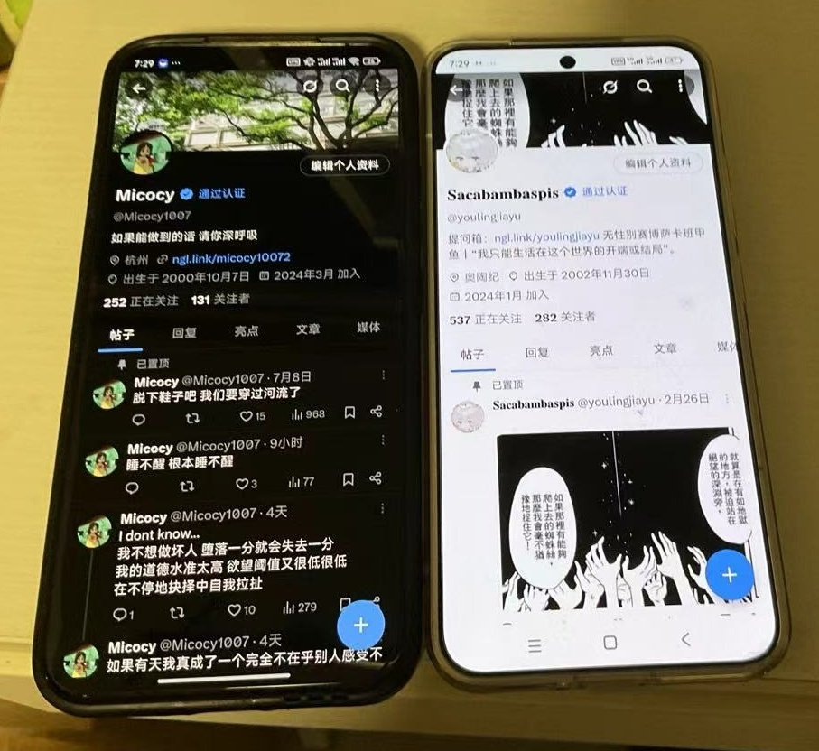

𝐒𝐚𝐜𝐚𝐛𝐚𝐦𝐛𝐚𝐬𝐩𝐢𝐬
@youlingjiayu
最后一起恰了一顿达美乐，已经不算度过相对失败的一生了……是的之前没吃过，不过我现在的住处也点不到就是……

𝐒𝐚𝐜𝐚𝐛𝐚𝐦𝐛𝐚𝐬𝐩𝐢𝐬
@youlingjiayu
和@Micocy1007 面基喵。
我说不带脑子就不带脑子，所以今天早上不仅没赶上车还改签晚了半小时，晚上在杭州东站狂奔一千多米赶车。
打破了清明去杭州时对食物的坏印象，私房菜好吃喵。
浙江省博还算好逛，顶层的画展有股奇怪的味道，闻得头晕。
感谢Micocy送的挂件，请我恰饭还送我礼物，太感激了呜呜。 https://t.co/mzaSMMwONR